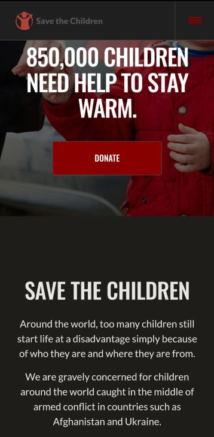
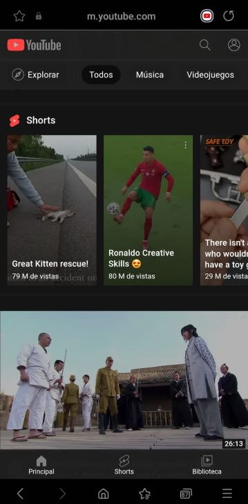

Visual Hierarchy
Save the children
savethechildren.net This website makes good use of the design principle of visual hierarchy, uses a certain proportion of fonts to establish visual order, uses color, contrast and white space to draw attention to certain elements of the website.
Alignment
Youtube
youtube.com This website uses alignment to create order in the website elements, it creates visual engagement by aligning videos and images.
Proximity
This website uses proximity to separete the images in a good way, it succesfully connect every image with the other and creates a pleasant visual experience.